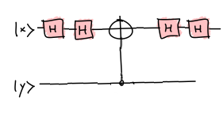

Ziher Misliš kako se dođe to toga da su to baš preokrenuta CNOT vrata?
Mislim da je to najbolje samo zapamtiti napamet, ali…
Pomaže ako ih gledaš kao CZ vrata okružena H vratima na kontrolnom qubitu.
CZ vrata su komutativna. Nije bitno koji je qubit kontrolni a nad kojim se obavlja, jer Z vrata utječu na globalnu fazu.
Zato možeš obrnuti CZ vrata, i dobiti ovo:

H i H se ponište i dobiješ obrnuti CNOT.